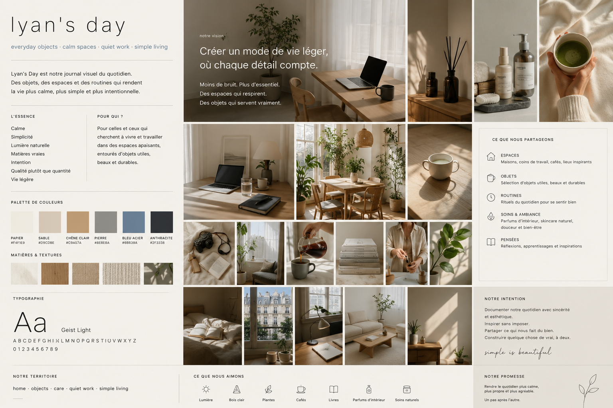

Espaces
Maisons, coins de travail, cafés, lieux inspirants et atmosphères calmes.
everyday objects · calm spaces · simple living
Lyan's Day est notre journal visuel du quotidien : des espaces qui respirent, des objets qui servent vraiment, des routines douces et une esthétique sincère, construite à deux, un pas après l'autre.
≈ 1 lettre par mois. Pas de bruit, pas de spam.
Nous documentons ce qui rend la vie plus calme : une lumière du matin, une table bien rangée, un parfum d'intérieur, une routine de soin naturelle, un objet simple qui améliore vraiment le quotidien.
L'objectif n'est pas de devenir une agence, ni de courir après les tendances. Lyan's Day cherche d'abord à partager une esthétique sincère : contenu, journal photo, lieux, objets, ambiances et inspirations.
ce que nous partageons
Maisons, coins de travail, cafés, lieux inspirants et atmosphères calmes.
Sélection d'objets utiles, beaux, durables et cohérents avec une vie simple.
Rituels du matin, travail calme, rangement, pauses, lecture et moments lents.
Parfums d'intérieur, skincare naturel, matières douces et bien-être discret.
territoire visuel
Une direction photo volontairement stable : beige papier, sable, chêne clair, pierre douce, bleu acier et anthracite en contraste.
objets & système d'ambiance
Pour garder la même ambiance sur les photos, le site reprend une palette courte, une typographie légère, beaucoup d'espace blanc, des ombres douces et des images baignées de lumière indirecte.
référence créative
Cette page est pensée pour évoluer en blog / portfolio photo : articles courts, séries d'images, objets du quotidien, lieux, setups, notes et inspirations.
